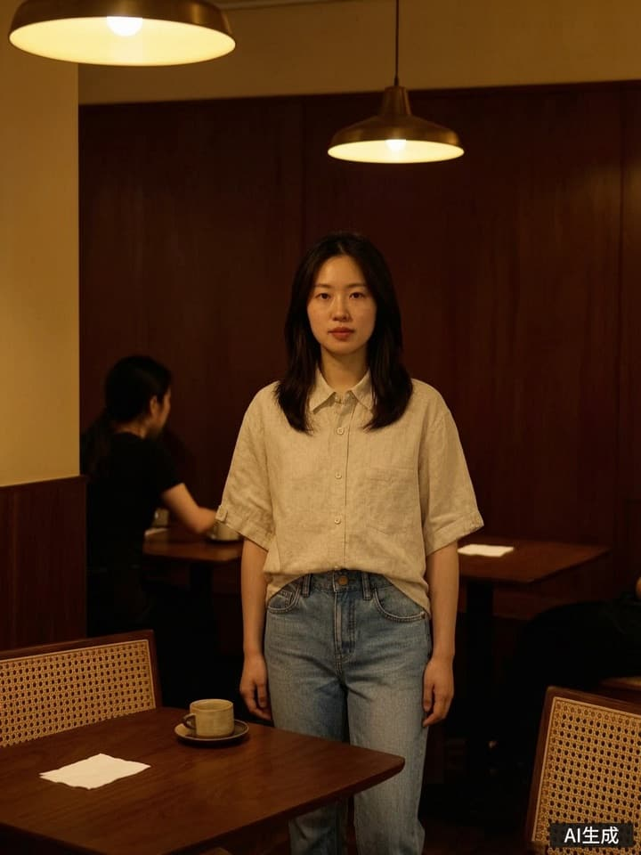
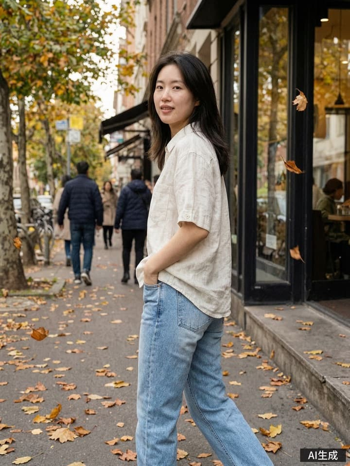
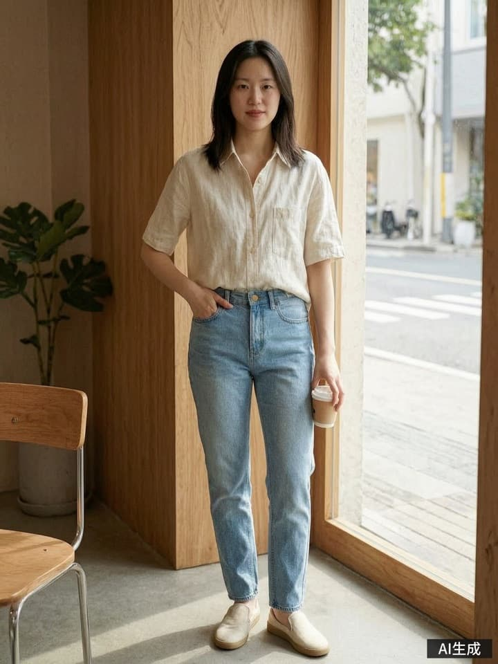
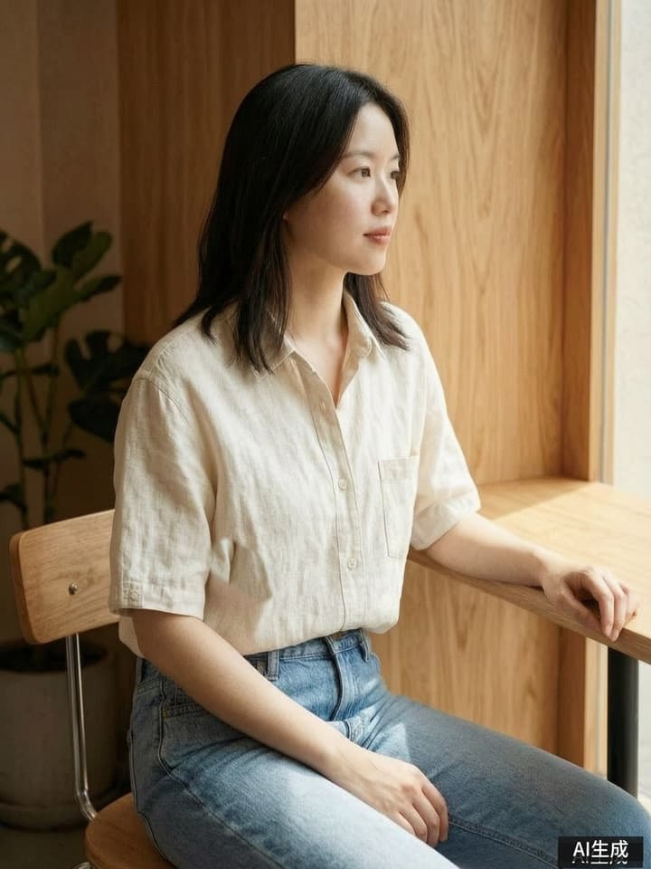
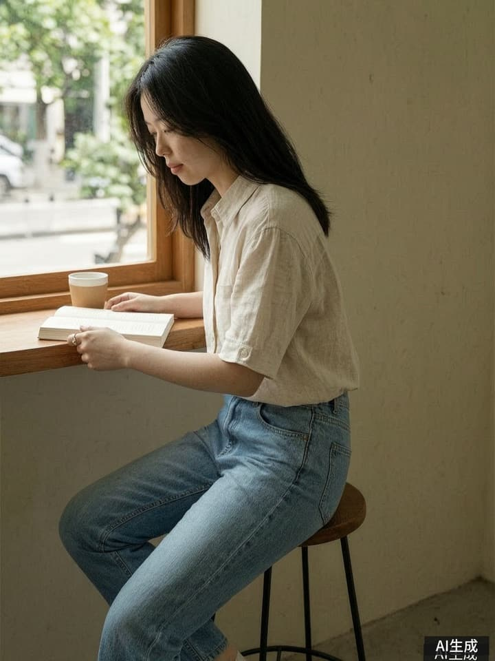
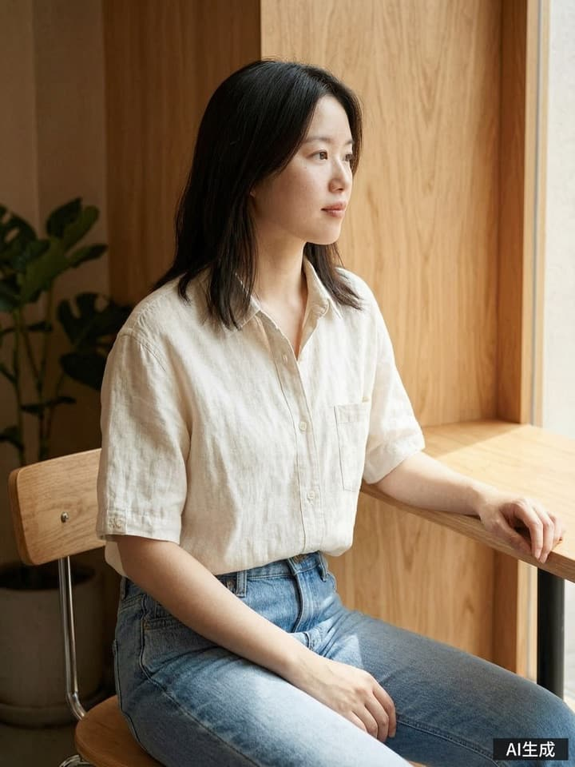
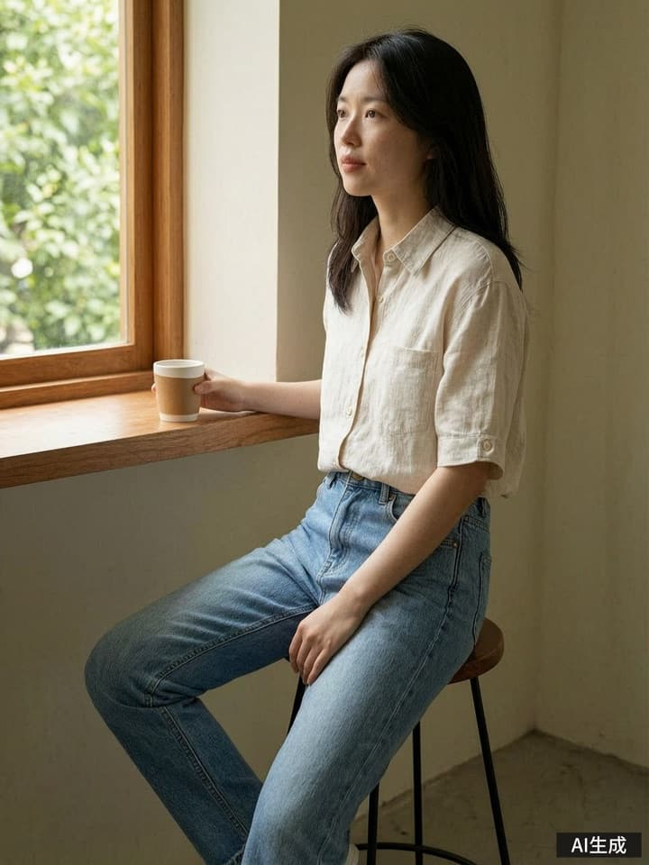

AI生成AI生成
WELCOME TO YOUR STUDIO先认识衣序，
先认识衣序，
再开始创作。
隐私提示
衣序会处理你的账号、上传素材与生成记录，用于提供穿搭创作服务。生成所需内容会交由第三方模型服务处理。你可以查看、删除这组片或注销账号。
查看《用户协议》和《隐私政策》
请仅上传有权使用的素材与肖像。
YIXU / PRODUCT DESIGN SPECIFICATION
衣序 · 从一件衣服，到一组有故事的穿搭成片。
一份覆盖创作、判断与发布的完整移动端设计。
片场是暗的，
编辑桌是亮的。
隐私提示、三屏引导与账号入口。

AI生成隐私提示
衣序会处理你的账号、上传素材与生成记录，用于提供穿搭创作服务。生成所需内容会交由第三方模型服务处理。你可以查看、删除这组片或注销账号。
查看《用户协议》和《隐私政策》
请仅上传有权使用的素材与肖像。
从衣服出发，把灵感、脚本和画面，慢慢整理成你的下一篇穿搭笔记。

交给我们，全套图文和视频一次出好，中途可以接手。想亲自打磨，就选沉浸编导。

开拍前看清预估。沉浸编导逐步确认，一键出片按开拍时的说明自动推进。发布时请勾选 AI 内容声明。
用户协议 · 隐私政策 · AI 内容免责声明
注册后会展示一次恢复码，请妥善保存。
这是唯一的找回方式。恢复码只在这一次展示，请保存在只有你能访问的地方。
设计占位 · 实际格式 xxxx-xxxx-xxxx
首页与两种开拍模式。
A LITTLE INSPIRATION

AI生成
AI生成出图中 2/3

AI生成全套已出好
全套图文和视频一次出好，中途可以接手。
已选 1 张 · 浅色短袖衬衫
默认使用档案照片；没有则用 AI 模特
一键出片建议上传，帮助确定风格
聊灵感、定脚本、挑图改图，每一步你说了算。
上传衣服原图，保留清晰细节
默认使用档案照片；没有则用 AI 模特
喜欢的光线、构图或氛围
沉浸编导与自动推进，过程透明且可恢复。
衣序 · 编导间
这件衬衫适合轻松的日常场景。给你两个方向，先挑一个喜欢的。
窗边自然光 · 米白与木色
拿起咖啡，不看镜头
让亚麻纹理成为主角。

AI生成35mm 街拍 · 微微逆光
一边走，一边整理衣角
更有胶片里的随意感。
衣序 · 编导间
围绕咖啡馆午后，先出封面，再让其余画面延续同一束光。
标题备选
把周末穿得松弛一点
50mm · 侧窗自然光
手捧咖啡，微微侧身，不看镜头。
配文：慢下来，也很好。
35mm · 略低机位 · 轻微动态模糊
衬衫自然垂落，保留面料纹理。
50mm · 半身裁切
整理衣角，拍清袖口和纽扣。
视频：5 秒，抬起杯子的自然动作。
封面已出好，其余镜头沿用人物与光线。
衣序 · 进度播报
封面好了。接下来完成另外两个镜头，再整理笔记和 5 秒视频。
出图失败
衣序 · 编导间
前两张已保留。你可以继续聊来调整脚本，也可以先用已完成的图片继续挑图。
失败任务退点。再次生成前会重新展示预估并由你确认。
版本、局部改、挑图与未通过版本的主动确认。
袖口仍有卷起，未完全放平。笔记仍采用 v1。
v1 · 已采用
v2 · 未通过
长按：局部改 / 整张改 / 引用到对话 / 对比版本 / 保存到相册
双指缩放 · 双击放大 · 左右切换图片
只改圈选区域；没有圈选时为整张改。
每个镜头保留一个版本，拖动调整顺序。
未改到位的版本不会自动入稿。
点图查看版本；「仍然采用」需确认原因。
检查结果：袖口仍有卷起，未完全放平。
采用后，这张图会进入笔记和视频候选；预览与发布清单会标记「手动采用」。
笔记、草稿冲突、发布清单与视频。
封面
镜头 03
周末的咖啡馆，适合一件轻盈的衬衫。
米白与木色，舒服得刚刚好。
你有尚未发布的本地修改。选图变化后，编导间已整理了新的笔记。
比起赶路，今天更想在窗边坐一会儿。
一件轻松的衬衫，就足够了。
保留我的修改：继续使用当前文案和顺序。
采用新版本：用新笔记替换本地草稿。
操作前不会自动清空你的修改。
准备发布会复制文案、保存图片和视频，再打开系统分享面板。请在发布平台核对内容并勾选 AI 声明。
THAT'S A WRAP
源图：镜头 01 · v1 · 已采用
视频阶段已定稿，图片顺序与版本不再变更。
衣序 · 编导间
3 个镜头，先从封面开始。
窗边半身封面 / 走向座位 / 衣角细节
预计 18 点 · 今日还有 8 点
脚本和素材已保留，可以继续聊灵感。
生成 5 秒视频 · 预计 15 点
只有你确认后才会开始。
片场管理、个人档案、设置与账号闭环。
按最近更新排序 · 下拉刷新
左滑或长按可删除这组片。
将删除消息、任务与生成媒体。上传的衣服原图保留。此操作无法撤销。
你的照片和偏好，会成为下一组片的起点。
本人照片
上传后可设默认、删除
仅用你有权使用的肖像
当前未上传，新片将使用 AI 模特。
新片默认使用档案的第一张照片，也可在开拍前更换。
账号 xiaoxu
明天 00:00 恢复
照片、昵称与风格偏好
密码、恢复码与注销
退出前确认本地草稿已保存。
当前账号
修改后，其他旧登录会失效
重新生成后，旧码立即失效
用户协议 / 隐私政策 / AI 内容免责声明
删除全部片场与媒体，无法撤销
修改后，当前设备保持登录，其他旧登录将失效。
如果恢复码丢失或可能泄露，请验证当前密码后重新生成。
进入「保存恢复码」，复制并点「我已保存」后返回。
验证成功后重置密码并登录，同时生成新的恢复码。
账号或恢复码不正确，请核对后重试。
请使用注册时保存的恢复码。当前不支持短信或邮箱验证。
账号 xiaoxu 将被注销。该账号下的全部片场、消息、任务和媒体会被清理，所有登录立即失效。
协议、隐私、AI 声明与关于。
衣序（演示版）
衣序提供衣服理解、灵感方向、脚本、图片编辑、笔记和短视频创作辅助。请妥善保管密码及恢复码。
正式出图、改图与视频按点数记录。提交前展示预估，失败任务退点。一键出片按开拍时的说明自动推进，可中途接手。
请仅上传有权使用的衣服图、参考图和肖像。不得使用未经授权的他人肖像、侵权素材或内衣泳装等敏感品类内容。
生成内容商用前应自行核对。你可以删除这组片或注销账号；服务变更及终止会按正式文本说明处理。
联系：97000945@qq.com
衣序（演示版）
账号资料、上传的衣服图、本人照片与参考图、生成记录，以及提供服务所需的设备和日志信息。
用于账号管理与内容创作。生成所需内容会交由阿里云百炼、DeepSeek 处理，仅传递完成生成所需的内容。
保存期限以正式政策为准。你可以查看资料、删除这组片或注销账号。注销会清理该账号的片场与媒体。
未成年人应在监护人指导下阅读政策、使用服务，并避免上传无权使用的肖像与素材。
联系：97000945@qq.com
衣序（演示版）
图片、视频与文案可能存在错误。衣服还原度以实物为准，商用前请核对款式、面料、人物与文案事实。
生成内容按《人工智能生成合成内容标识办法》保留可见标识与相关标识信息，发布时请勾选平台 AI 内容声明。
「未改到位」表示修改未核对通过，不会自动进入笔记。你仍可主动采用，并在发布清单中看到「手动采用」。
联系：97000945@qq.com
OUTFIT NOTES / DEMO
服务地址
运行时读取当前配置
联系：97000945@qq.com